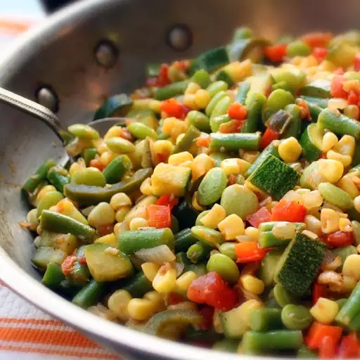

Home
Chef John's Succotash

Description
This may be America's oldest vegetable recipe, coming from a Narragansett Indian word, 'msickquatash,' which, according to the Merriam-Webster Dictionary, means 'boiled corn kernels.' When most of you hear the word succotash, you probably don't think of a delicious vegetable side dish, you probably think of the catchphrase, 'Sufferin' succotash!' But succotash really is a great and very underrated recipe.
Ingredients
- 1 tablespoon olive oil
- 1 ½ teaspoons butter
- ½ yellow onion, diced
- salt and freshly ground black pepper to taste
- ½ red bell pepper, diced
- 1 jalapeno pepper, sliced
- 3 cloves garlic, minced
- ½ cup diced tomatoes
- ½ teaspoon ground cumin
- 1 pinch cayenne pepper
- 2 green zucchinis, cut into cubes
- 4 ounces fresh green beans, cut into 1/2-inch pieces
- ¼ cup water
- 1 ½ cups corn
- 1 cup frozen baby lima beans, thawed
Steps
- Heat olive oil and butter in a skillet over medium heat. Cook and stir onion with a pinch of salt in hot butter and oil until onion is softened and slightly golden, 6 to 7 minutes. Add red bell pepper, jalapeno, and garlic; cook and stir until peppers are fragrant and softened, 3 to 4 minutes.
- Stir tomatoes, cumin, black pepper, and cayenne pepper into onion mixture; cook and stir until heated through, 1 to 3 minutes. Add zucchini, green beans, water, and a pinch of salt; cook until zucchini are almost tender, 5 to 6 minutes. Stir corn and lima beans into zucchini mixture until heated through, about 3 to 5 minutes more. Season with salt.